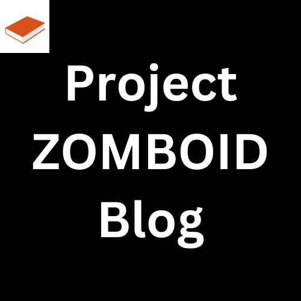
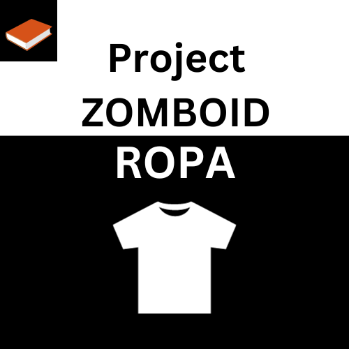
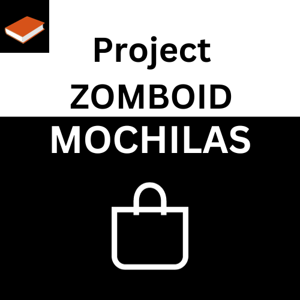
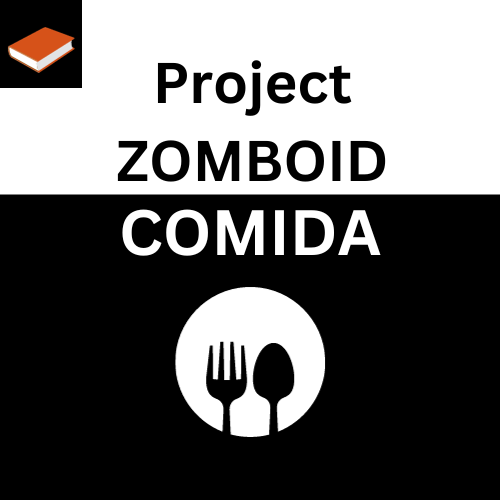
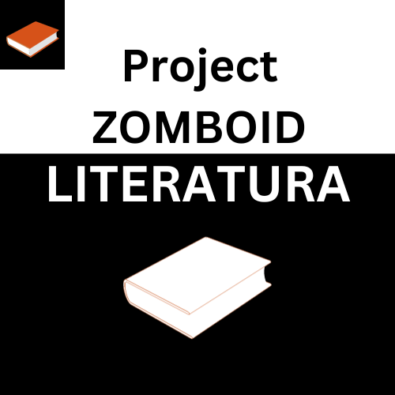
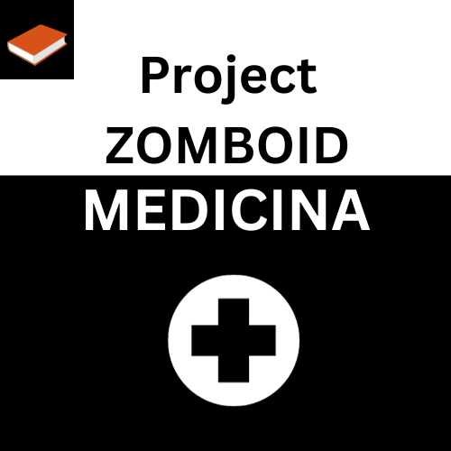
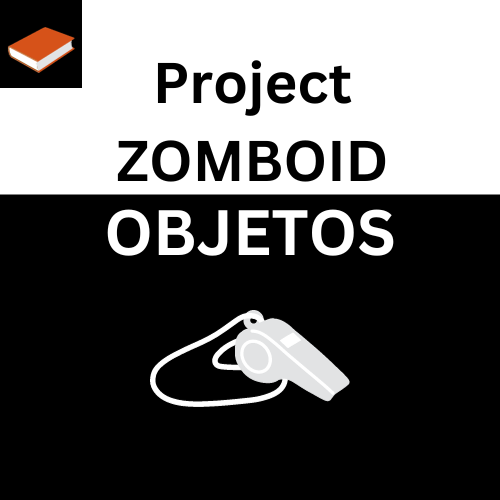
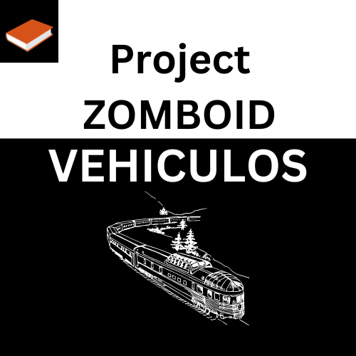
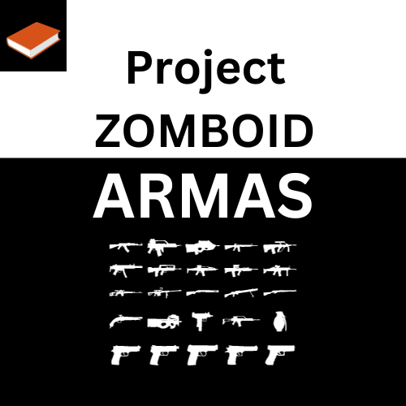

Este es un juego de Supervivencia, de mundo abierto que se encuentra en Early Acess, desarrollado por The Indie Stones. Ambientado en un mundo post apocalíptico, lleno de zombies, donde tu único objetivo es sobrevivir. “Fragmento modificado de Project Zomboid wiki”.
Los objetos, en Project Zomboid son casi tan variados como en la vida real, por eso aquí te dejamos una guía completa de los objetos que podrás encontrar en el juego, los cuales si sabes utilizar te permitirán vivir, crear tu base, y limpiar muchos zombies.
Aclaración: Los objetos que se encuentran en las siguientes listas son los objetos que se pueden encontrar en el Project Zomboid Original, cualquier otro objeto, puede ser adquirido mediante la instalación de Mods. Estos mods pueden hacer mucho mas interesante la experiencia agregando objetos, misiones, etc. Para más información de Mods en Project zomboid presione aquí.
En este videojuego, la ropa deja de ser algo estético para pasar a ser una herramienta, ya sea te lastimes tendrás que rasgar tela para vendarte, o protegerte mejor de los zombies, la ropa además te protegerá del frio, entre otras cosas por eso aquí veras, la ropa que hay en Project zomboid, además de encontrar artículos para que puedas mejorar día a día en el apocalipsis zombie.
El equipo en Project Zomboid, refiere a infinidad de objetos de Equipables (Mochilas, Bolsos) y Equipaje de mano, pasando por electrónicos o fuentes de luz. Estos objetos son los que te permitirán preparar la comida, liquidar zombies, llevar equipaje a menor peso, o cocinar entre otras cosas. Es importante que sepas sobre los objetos ya que estos te salvaran mas de una vez dentro del apocalipsis.
En Project zomboid, los zombies no son lo único que te pueden matar, por eso la comida es tan importante. En un principio sirve para alimentarse, pero también pueden reducir la fatiga acelerar la curación o desaburrir.
Estos alimentos nos los encontraremos, aunque también podemos cocinar o cultivar, todo depende de donde y en que momento nos encontremos nos convendrá uno u otro. Un dato interesante, es que también podremos pescar o poner trampas.
En Project Zomboid, la literatura tiene dos usos, la primera es no aburrirse y desestresarse, y la segunda es la lectura para acelerar las habilidades, ya sea carpintería, mecánica, etc. A su vez tendrá que practicar para mejorar día a día y de esta forma sobrevivir de una forma mas fácil.
Los zombies, el hambre y el frio son solo algunos de tus enemigos en el Project Zomboid, pero las medicinas son tus amigos. Ya sea que no encuentres lugar para dormir, tengas dolor o te hayas cortado, en Project zomboid hay medicinas para todo.
Y como si fuera poco puedes usar medicinas naturales, diferentes hierbas que te ayudaran en tu camino, para que puedas tener las medicinas en el jardín de tu refugio, o en donde quieras.
¿Queres hacerte una casa?, ¿Queres hacer un objeto electrónico?, buenos los materiales te lo permiten. A partir de lo que te encontraras en el mapa, podrás realizar diferentes construcciones, herramientas, etc. Esto en un principio no sirve mucho, pero a medida que pase el apocalipsis, necesitaras tener mas y mas materiales, para que tu partida en Project Zomboid, sea mucho más sencilla.
En el Project zomboid, hay objetos varios que solo tienen utilidad decorativa, sin embargo, la elegancia y la sencilles de estos objetos hacen que merezcan la pena no solo incluirlos en esta lista, sino también buscarlos y llevarlos a nuestras bases.
Todos estamos de acuerdo, que los vehículos son increíbles, pero en Project Zomboid lo son mas. Por eso en esta lista te mostramos las piezas de vehículos, que puedes usar para arreglar o construir el auto de tus sueños. Para ver los vehículos en Project Zomboid, presione aquí.
Project Zomboid es un juego de supervivencia, y como todo juego de supervivencia zombie, y como todo juego donde hay zombie hay que defenderse. Por eso en este articulo hablamos de las diferentes que nos provee el Project Zomboid, ya sean de corto o largo alcance.
